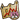
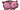

有许多物品可以提升最大生命值，不属于恢复（机制），但是有其他物品可以影响获得的最大生命值。
最大生命值相关物品
 幽灵獾：每4.2s：消耗1点
幽灵獾：每4.2s：消耗1点 来获得20点最大生命值，且每有一个
来获得20点最大生命值，且每有一个 的
的 物品，还会获得2的最大生命值加成。
物品，还会获得2的最大生命值加成。 黑色主教：被吃掉时：削弱对手20%的生命恢复效果，还会削弱20%获得的最大生命值。
黑色主教：被吃掉时：削弱对手20%的生命恢复效果，还会削弱20%获得的最大生命值。 血色护符：战斗开始时：获得2层
血色护符：战斗开始时：获得2层 ，20最大生命值。
，20最大生命值。 奶酪：每3.8s:获得10点最大生命值和1个随机增益效果。
奶酪：每3.8s:获得10点最大生命值和1个随机增益效果。 奶酪黏黏：的物品激活达到5次：获得22点最大生命值和2层随机增益效果。
奶酪黏黏：的物品激活达到5次：获得22点最大生命值和2层随机增益效果。 大象符文：放入背包：最大生命值增加50。
大象符文：放入背包：最大生命值增加50。 亡灵庇护：物品的最大生命值提升效果+20%。 过量治疗时：过量治疗的生命值增加为最大生命值。
亡灵庇护：物品的最大生命值提升效果+20%。 过量治疗时：过量治疗的生命值增加为最大生命值。 火坑：战斗开始时：火坑里每有一个
火坑：战斗开始时：火坑里每有一个 物品，获得5点最大生命值。
物品，获得5点最大生命值。 姜饼杰瑞：战斗开始时：获得40最大生命值。每3s：消耗1点
姜饼杰瑞：战斗开始时：获得40最大生命值。每3s：消耗1点 ，1层
，1层 还有1点，获得1层
还有1点，获得1层 ，3层
，3层 还有20点最大生命值。
还有20点最大生命值。 心之容器：消耗7层：获得100点最大生命值，2层，且生命恢复效果增加15%（单次触发）。
心之容器：消耗7层：获得100点最大生命值，2层，且生命恢复效果增加15%（单次触发）。 黑暗心之容器：消耗7层：获得100点最大生命值，还有4层，并且你的对手生命恢复效果减低40%（单次触发）。
黑暗心之容器：消耗7层：获得100点最大生命值，还有4层，并且你的对手生命恢复效果减低40%（单次触发）。 心形盾牌：消耗7层：还能抵挡
心形盾牌：消耗7层：还能抵挡 和
和 伤害，并获得150的最大生命值（单次触发）。
伤害，并获得150的最大生命值（单次触发）。-  投资机会：的物品消耗增益效果时：获得4点最大生命值。
 纯粹加成：战斗开始时：获得10%最大生命值，10%基础耐力恢复。
纯粹加成：战斗开始时：获得10%最大生命值，10%基础耐力恢复。 升级：每5s：获得10点最大生命值，1点耐力，还有1点和1点。
升级：每5s：获得10点最大生命值，1点耐力，还有1点和1点。 魔法入门指南：每5s：消耗1点：获得8点最大生命值，每有一个的魔法卷轴最大生命值再增加3（打造的魔法卷轴算作2次）。
魔法入门指南：每5s：消耗1点：获得8点最大生命值，每有一个的魔法卷轴最大生命值再增加3（打造的魔法卷轴算作2次）。 魔法魔药：消耗或生命值下降到50%时：消耗此魔药，并且获得4点和18点最大生命值。
魔法魔药：消耗或生命值下降到50%时：消耗此魔药，并且获得4点和18点最大生命值。- 更多加成：战斗开始时：获得10%最大生命值。你的武器造成的伤害+5%。
-  存钱罐：战斗开始时：每个的带“战斗开始时”触发效果物品提供2点最大生命值。
 宝石存钱罐：战斗开始时：每有一个镶入槽位的宝石，获得4点最大生命值。
宝石存钱罐：战斗开始时：每有一个镶入槽位的宝石，获得4点最大生命值。 月亮之力：疲惫开始时：增加65%最大生命值。
月亮之力：疲惫开始时：增加65%最大生命值。- 爱的拼图背包：战斗开始时：获得7点最大生命值。
 彩虹杀戮者黏黏：的物品激活达到9次：获得40点最大生命值、20点
彩虹杀戮者黏黏：的物品激活达到9次：获得40点最大生命值、20点 、2层和2层随机增益效果，向对手施加3层
、2层和2层随机增益效果，向对手施加3层 ，的武器伤害+4。
，的武器伤害+4。 蛇蛇：战斗开始时：每有一个的宠物，将获得4点和50点最大生命值。
蛇蛇：战斗开始时：每有一个的宠物，将获得4点和50点最大生命值。 雪球：对手物品的最大生命值提升效果降低15%。
雪球：对手物品的最大生命值提升效果降低15%。 强力魔法魔药：消耗或当生命值低于50%时：消耗此魔药并获得9点和25点最大生命值。
强力魔法魔药：消耗或当生命值低于50%时：消耗此魔药并获得9点和25点最大生命值。 荆棘之花：每获得1层：获得11点最大生命值。
荆棘之花：每获得1层：获得11点最大生命值。 细绳：的物品激活时：有20%的几率获得2点最大生命值。每有一个
细绳：的物品激活时：有20%的几率获得2点最大生命值。每有一个 的通用物品，几率再增加20%。
的通用物品，几率再增加20%。
| v · d · e 游戏机制 |
|---|
| 物品栏和商店 |
| 战斗 |
| 增益效果 |
| 减益效果 |
| 其他 |